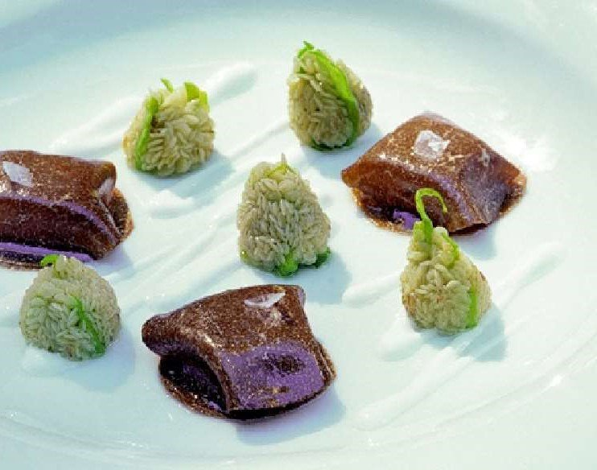

Mock tartufo ravioli with Padrón pepper seeds and yoghurt

For the mock tartufo ravioli
For the truffle skin
For the hot summer truffle jelly
For the Padrón pepper seeds
For the yoghurt
To finish
Mock tartufo ravioli — Clean the truffle with a brush under running water.
Peel the truffle and keep the skin.
Trim one of the truffles so that it is 2 cm in diameter and cut it into 12 slices that are 0.1 cm thick.
Trim the other truffle so that it is 2.5 cm in diameter and cut it into 12 slices that are 1.5 mm thick.
Spread with truffle oil.
Truffle skin — Bring the truffle peel and the water to the boil over a low heat. When it has reached the boil, continue boiling for 5 min.
Remove from the heat, cover and leave to infuse for 30 min.
Strain and sieve. Season with salt.
Hot summer truffle jelly — Mix the truffle stock and the powdered agar-agar together.
Stirring continuously, bring to the boil over a medium heat, remove from the heat and whisk.
Pour a 1.5 cm thick layer in a dish and leave to set in the fridge for at least 3 hours.
Padrón pepper seeds — Fry the peppers in piping hot olive oil for 20 seconds.
Use a slotted spoon to remove them and drain on kitchen paper.
Use a pair of scissors to cut the base of the stem and remove the seed pods and keep on one side.
Yoghurt — Place the yoghurt in a baster and beat.
To finish — Place 3 slices of truffle, which should be 2 cm each in diameter. Place a hot truffle jelly cylinder on top of them.
Arrange 5 Padrón pepper seeds between the truffle slices.
Heat the dish in the salamandra for 25 sec.
Arrange 3 of the 2.5 cm diameter truffle slices on top of the jelly. Heat for 10 seconds.
Drizzle a zigzag of Greek yoghurt in a ring around the ingredients. Repeat with the tartufo oil.
Sprinkle Maldon over the truffle raviolis and the seeds.